EfficientGlobalOptimization¶
-
class
EfficientGlobalOptimization(*args)¶ Efficient Global Optimization algorithm.
The EGO algorithm [jones1998] is an adaptative optimization method based on kriging. An initial design of experiment is used to build a first metamodel. At each iteration a new point that maximizes a criterion is chosen as optimizer candidate. The criterion uses a tradeoff between the metamodel value and the conditional variance. Then the new point is evaluated using the original model and the metamodel is relearnt on the extended design of experiment.
- Available constructors:
EfficientGlobalOptimization(problem, krigingResult)
- Parameters
- problem
OptimizationProblem The optimization problem to solve optionally, a 2nd objective marginal can be used as noise
- krigingResult
KrigingResult The result of the meta-model on the first design of experiment
- problem
Notes
Each point added to the metamodel design seeks to improve the current minimum. We chose the point so as to maximize an improvement criterion based on the metamodel.
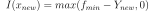
The default criteria is called EI (Expected Improvement) and aims at maximizing the mean improvement:
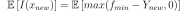
This criterion is explicited using the kriging mean and variance:
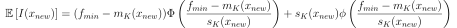
An observation noise variance can be provided thanks to a 2nd objective marginal.
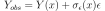
In that case the AEI (Augmented Expected Improvement) formulation is used. As we don’t have access to the real minimum of the function anymore a quantile of the kriging prediction is used, with the constant 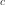:
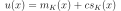
This criterion is minimized over the design points:
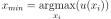
The AEI criterion reads:
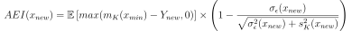
with
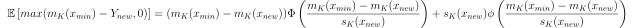
A less computationally expensive noise function can be provided through
setNoiseModel()to evaluate 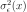 for the improvement criterion optimization, the objective being only used to compute values and associated noise at design points.By default the criteria is minimized using
MultiStartwith starting points uniformly sampled in the optimization problem bounds, seesetMultiStartExperimentSize()andsetMultiStartNumber(). This behavior can be overridden by using another solver withsetOptimizationAlgorithm().Examples
>>> import openturns as ot >>> ot.RandomGenerator.SetSeed(0) >>> dim = 4 >>> model = ot.SymbolicFunction(['x1', 'x2', 'x3', 'x4'], ... ['x1*x1+x2^3*x1+x3+x4']) >>> model = ot.MemoizeFunction(model) >>> bounds = ot.Interval([-5.0] * dim, [5.0] * dim) >>> problem = ot.OptimizationProblem() >>> problem.setObjective(model) >>> problem.setBounds(bounds) >>> experiment = ot.Composite([0.0] * dim, [1.0, 2.0, 4.0]) >>> inputSample = experiment.generate() >>> outputSample = model(inputSample) >>> covarianceModel = ot.SquaredExponential([2.0] * dim, [0.1]) >>> basis = ot.ConstantBasisFactory(dim).build() >>> kriging = ot.KrigingAlgorithm(inputSample, outputSample, covarianceModel, basis) >>> kriging.run() >>> algo = ot.EfficientGlobalOptimization(problem, kriging.getResult()) >>> algo.setMaximumEvaluationNumber(2) >>> algo.run() >>> result = algo.getResult()
- Attributes
thisownThe membership flag
Methods
Compute the Lagrange multipliers of a problem at a given point.
AEI tradeoff constant accessor.
Accessor to the object’s name.
Correlation length stopping criterion factor accessor.
Expected improvement values.
getId()Accessor to the object’s id.
Improvement criterion factor accessor.
Accessor to maximum allowed absolute error.
Accessor to maximum allowed constraint error.
Accessor to maximum allowed number of evaluations.
Accessor to maximum allowed number of iterations.
Accessor to maximum allowed relative error.
Accessor to maximum allowed residual error.
Size of the design to draw starting points.
Number of starting points for the criterion optimization.
getName()Accessor to the object’s name.
Improvement noise model accessor.
Expected improvement solver accessor.
Parameter estimation period accessor.
Accessor to optimization problem.
Accessor to optimization result.
Accessor to the object’s shadowed id.
Accessor to starting point.
Accessor to the verbosity flag.
Accessor to the object’s visibility state.
hasName()Test if the object is named.
Test if the object has a distinguishable name.
run()Launch the optimization.
AEI tradeoff constant accessor.
Correlation length stopping criterion factor accessor.
setImprovementFactor(improvementFactor)Improvement criterion factor accessor.
setMaximumAbsoluteError(maximumAbsoluteError)Accessor to maximum allowed absolute error.
setMaximumConstraintError(maximumConstraintError)Accessor to maximum allowed constraint error.
Accessor to maximum allowed number of evaluations.
setMaximumIterationNumber(maximumIterationNumber)Accessor to maximum allowed number of iterations.
setMaximumRelativeError(maximumRelativeError)Accessor to maximum allowed relative error.
setMaximumResidualError(maximumResidualError)Accessor to maximum allowed residual error.
Size of the design to draw starting points.
setMultiStartNumber(multiStartNumberSize)Number of starting points for the criterion optimization.
setName(name)Accessor to the object’s name.
setNoiseModel(noiseModel)Improvement noise model accessor.
setOptimizationAlgorithm(solver)Expected improvement solver accessor.
Parameter estimation period accessor.
setProblem(problem)Accessor to optimization problem.
setProgressCallback(*args)Set up a progress callback.
setResult(result)Accessor to optimization result.
setShadowedId(id)Accessor to the object’s shadowed id.
setStartingPoint(startingPoint)Accessor to starting point.
setStopCallback(*args)Set up a stop callback.
setVerbose(verbose)Accessor to the verbosity flag.
setVisibility(visible)Accessor to the object’s visibility state.
-
__init__(*args)¶ Initialize self. See help(type(self)) for accurate signature.
-
computeLagrangeMultipliers(x)¶ Compute the Lagrange multipliers of a problem at a given point.
- Parameters
- xsequence of float
Point at which the Lagrange multipliers are computed.
- Returns
- lagrangeMultipliersequence of float
Lagrange multipliers of the problem at the given point.
Notes
The Lagrange multipliers
 are associated with the following Lagrangian formulation of the optimization problem:
are associated with the following Lagrangian formulation of the optimization problem:
where
 .
.- The Lagrange multipliers are stored as
 , where:
, where:  is of dimension 0 if there is no equality
constraint, else of dimension the dimension of
is of dimension 0 if there is no equality
constraint, else of dimension the dimension of  ie the number of scalar equality constraints
ie the number of scalar equality constraints and
and  are of dimension 0 if there is no bound constraint, else of dimension of
are of dimension 0 if there is no bound constraint, else of dimension of 
- is of dimension 0 if there is no inequality constraint, else of dimension the dimension of
 ie the number of scalar inequality constraints
ie the number of scalar inequality constraints
The vector
is solution of the following linear system:![\Tr{\vect{\lambda}}_{eq}\left[\dfrac{\partial g}{\partial\vect{x}}(\vect{x})\right]+
\Tr{\vect{\lambda}}_{\ell}\left[\dfrac{\partial (\vect{x}-\vect{\ell})^{+}}{\partial\vect{x}}(\vect{x})\right]+
\Tr{\vect{\lambda}}_{u}\left[\dfrac{\partial (\vect{u}-\vect{x})^{+}}{\partial\vect{x}}(\vect{x})\right]+
\Tr{\vect{\lambda}}_{ineq}\left[\dfrac{\partial h}{\partial\vect{x}}(\vect{x})\right]=-\dfrac{\partial J}{\partial\vect{x}}(\vect{x})](../../_images/math/2810950c1c365bc4f987d3b13217e4bda9b9f792.svg)
If there is no constraint of any kind,
is of dimension 0, as well as if no constraint is active.
-
getAEITradeoff()¶ AEI tradeoff constant accessor.
- Returns
- cfloat
Used to define a quantile of the kriging prediction at the design points. 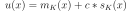
-
getClassName()¶ Accessor to the object’s name.
- Returns
- class_namestr
The object class name (object.__class__.__name__).
-
getCorrelationLengthFactor()¶ Correlation length stopping criterion factor accessor.
When a correlation length becomes smaller than the minimal distance between design point for a single component that means the model tends to be noisy, and the EGO formulation is not adapted anymore.
- Returns
- bfloat
Used to define a stopping criterion on the minimum correlation length: 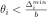 with 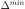 the minimum distance between design points.
-
getExpectedImprovement()¶ Expected improvement values.
- Returns
- ei
Sample The expected improvement optimal values.
- ei
-
getId()¶ Accessor to the object’s id.
- Returns
- idint
Internal unique identifier.
-
getImprovementFactor()¶ Improvement criterion factor accessor.
- Returns
- afloat
Used to define a stopping criterion on the improvement criterion: 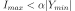 with 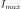 the current maximum of the improvement and 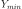 the current optimum.
-
getMaximumAbsoluteError()¶ Accessor to maximum allowed absolute error.
- Returns
- maximumAbsoluteErrorfloat
Maximum allowed absolute error, where the absolute error is defined by
 where
where  and
and  are two consecutive approximations of the optimum.
are two consecutive approximations of the optimum.
-
getMaximumConstraintError()¶ Accessor to maximum allowed constraint error.
- Returns
- maximumConstraintErrorfloat
Maximum allowed constraint error, where the constraint error is defined by
 where is the current approximation of the optimum and
where is the current approximation of the optimum and  is the function that gathers all the equality and inequality constraints (violated values only)
is the function that gathers all the equality and inequality constraints (violated values only)
-
getMaximumEvaluationNumber()¶ Accessor to maximum allowed number of evaluations.
- Returns
- Nint
Maximum allowed number of evaluations.
-
getMaximumIterationNumber()¶ Accessor to maximum allowed number of iterations.
- Returns
- Nint
Maximum allowed number of iterations.
-
getMaximumRelativeError()¶ Accessor to maximum allowed relative error.
- Returns
- maximumRelativeErrorfloat
Maximum allowed relative error, where the relative error is defined by
 if
if  , else
, else  .
.
-
getMaximumResidualError()¶ Accessor to maximum allowed residual error.
- Returns
- maximumResidualErrorfloat
Maximum allowed residual error, where the residual error is defined by
 if
if  , else .
, else .
-
getMultiStartExperimentSize()¶ Size of the design to draw starting points.
- Returns
- multiStartExperimentSizeint
The size of the Monte Carlo design from which to select the best starting points.
-
getMultiStartNumber()¶ Number of starting points for the criterion optimization.
- Returns
- multiStartNumberint
The number of starting points for the criterion optimization.
-
getName()¶ Accessor to the object’s name.
- Returns
- namestr
The name of the object.
-
getNoiseModel()¶ Improvement noise model accessor.
- Returns
- noiseVariance
Function The noise variance used for the AEI criterion optimization only. Of same input dimension than the objective and 1-d output.
- noiseVariance
-
getOptimizationAlgorithm()¶ Expected improvement solver accessor.
- Returns
- solver
OptimizationSolver The solver used to optimize the expected improvement
- solver
-
getParameterEstimationPeriod()¶ Parameter estimation period accessor.
- Returns
- periodint
The number of iterations between covariance parameters re-learn. Default is 1 (each iteration). Can be set to 0 (never).
-
getProblem()¶ Accessor to optimization problem.
- Returns
- problem
OptimizationProblem Optimization problem.
- problem
-
getResult()¶ Accessor to optimization result.
- Returns
- result
OptimizationResult Result class.
- result
-
getShadowedId()¶ Accessor to the object’s shadowed id.
- Returns
- idint
Internal unique identifier.
-
getVerbose()¶ Accessor to the verbosity flag.
- Returns
- verbosebool
Verbosity flag state.
-
getVisibility()¶ Accessor to the object’s visibility state.
- Returns
- visiblebool
Visibility flag.
-
hasName()¶ Test if the object is named.
- Returns
- hasNamebool
True if the name is not empty.
-
hasVisibleName()¶ Test if the object has a distinguishable name.
- Returns
- hasVisibleNamebool
True if the name is not empty and not the default one.
-
run()¶ Launch the optimization.
-
setAEITradeoff(c)¶ AEI tradeoff constant accessor.
- Parameters
- cfloat
Used to define a quantile of the kriging prediction at the design points.
-
setCorrelationLengthFactor(b)¶ Correlation length stopping criterion factor accessor.
When a correlation length becomes smaller than the minimal distance between design point for a single component that means the model tends to be noisy, and the EGO formulation is not adapted anymore.
- Parameters
- bfloat
Used to define a stopping criterion on the minimum correlation length: with the minimum distance between design points.
-
setImprovementFactor(improvementFactor)¶ Improvement criterion factor accessor.
- Parameters
- afloat
Used to define a stopping criterion on the improvement criterion: with the current maximum of the improvement and the current optimum.
-
setMaximumAbsoluteError(maximumAbsoluteError)¶ Accessor to maximum allowed absolute error.
- Parameters
- maximumAbsoluteErrorfloat
Maximum allowed absolute error, where the absolute error is defined by
where
and are two consecutive approximations of the optimum.
-
setMaximumConstraintError(maximumConstraintError)¶ Accessor to maximum allowed constraint error.
- Parameters
- maximumConstraintErrorfloat
Maximum allowed constraint error, where the constraint error is defined by
where is the current approximation of the optimum and is the function that gathers all the equality and inequality constraints (violated values only)
-
setMaximumEvaluationNumber(maximumEvaluationNumber)¶ Accessor to maximum allowed number of evaluations.
- Parameters
- Nint
Maximum allowed number of evaluations.
-
setMaximumIterationNumber(maximumIterationNumber)¶ Accessor to maximum allowed number of iterations.
- Parameters
- Nint
Maximum allowed number of iterations.
-
setMaximumRelativeError(maximumRelativeError)¶ Accessor to maximum allowed relative error.
- Parameters
- maximumRelativeErrorfloat
Maximum allowed relative error, where the relative error is defined by
if , else .
-
setMaximumResidualError(maximumResidualError)¶ Accessor to maximum allowed residual error.
- Parameters
- Maximum allowed residual error, where the residual error is defined by
-
if , else .
-
setMultiStartExperimentSize(multiStartExperimentSize)¶ Size of the design to draw starting points.
- Parameters
- multiStartExperimentSizeint
The size of the Monte Carlo design from which to select the best starting points. The default number can be tweaked with the EfficientGlobalOptimization-DefaultMultiStartExperimentSize key from
ResourceMap.
-
setMultiStartNumber(multiStartNumberSize)¶ Number of starting points for the criterion optimization.
- Parameters
- multiStartNumberint
The number of starting points for the criterion optimization. The default number can be tweaked with the EfficientGlobalOptimization-DefaultMultiStartNumber key from
ResourceMap.
-
setName(name)¶ Accessor to the object’s name.
- Parameters
- namestr
The name of the object.
-
setNoiseModel(noiseModel)¶ Improvement noise model accessor.
- Parameters
- noiseVariance
Function The noise variance used for the AEI criterion optimization only. Of same input dimension than the objective and 1-d output.
- noiseVariance
-
setOptimizationAlgorithm(solver)¶ Expected improvement solver accessor.
- Parameters
- solver
OptimizationSolver The solver used to optimize the expected improvement
- solver
-
setParameterEstimationPeriod(parameterEstimationPeriod)¶ Parameter estimation period accessor.
- Parameters
- periodint
The number of iterations between covariance parameters re-learn. Default is 1 (each iteration). Can be set to 0 (never). The default number can be tweaked with the EfficientGlobalOptimization-DefaultParameterEstimationPeriod key from
ResourceMap.
-
setProblem(problem)¶ Accessor to optimization problem.
- Parameters
- problem
OptimizationProblem Optimization problem.
- problem
-
setProgressCallback(*args)¶ Set up a progress callback.
Can be used to programmatically report the progress of an optimization.
- Parameters
- callbackcallable
Takes a float as argument as percentage of progress.
Examples
>>> import sys >>> import openturns as ot >>> rosenbrock = ot.SymbolicFunction(['x1', 'x2'], ['(1-x1)^2+100*(x2-x1^2)^2']) >>> problem = ot.OptimizationProblem(rosenbrock) >>> solver = ot.OptimizationAlgorithm(problem) >>> solver.setStartingPoint([0, 0]) >>> solver.setMaximumResidualError(1.e-3) >>> solver.setMaximumIterationNumber(100) >>> def report_progress(progress): ... sys.stderr.write('-- progress=' + str(progress) + '%\n') >>> solver.setProgressCallback(report_progress) >>> solver.run()
-
setResult(result)¶ Accessor to optimization result.
- Parameters
- result
OptimizationResult Result class.
- result
-
setShadowedId(id)¶ Accessor to the object’s shadowed id.
- Parameters
- idint
Internal unique identifier.
-
setStartingPoint(startingPoint)¶ Accessor to starting point.
- Parameters
- startingPoint
Point Starting point.
- startingPoint
-
setStopCallback(*args)¶ Set up a stop callback.
Can be used to programmatically stop an optimization.
- Parameters
- callbackcallable
Returns an int deciding whether to stop or continue.
Examples
>>> import openturns as ot >>> rosenbrock = ot.SymbolicFunction(['x1', 'x2'], ['(1-x1)^2+100*(x2-x1^2)^2']) >>> problem = ot.OptimizationProblem(rosenbrock) >>> solver = ot.OptimizationAlgorithm(problem) >>> solver.setStartingPoint([0, 0]) >>> solver.setMaximumResidualError(1.e-3) >>> solver.setMaximumIterationNumber(100) >>> def ask_stop(): ... return True >>> solver.setStopCallback(ask_stop) >>> solver.run()
-
setVerbose(verbose)¶ Accessor to the verbosity flag.
- Parameters
- verbosebool
Verbosity flag state.
-
setVisibility(visible)¶ Accessor to the object’s visibility state.
- Parameters
- visiblebool
Visibility flag.
-
thisown¶ The membership flag